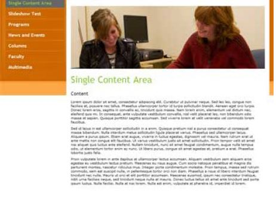
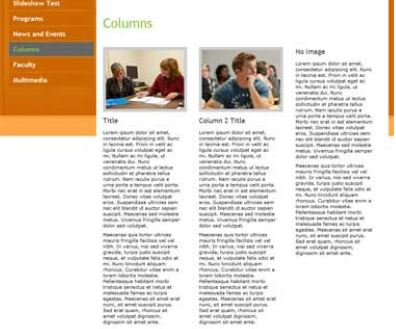
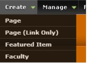
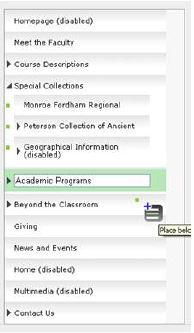
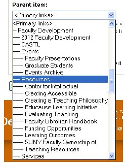
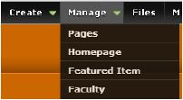

Live Site:
https://yourwebaddress.buffalostate.edu/adminlogin
U: your username
P: your password
*** Editing: When logged in, any page can be edited while viewing the page.
Simply click the edit tab to change your content.
Pages can also be edited from the Manage > Pages tab
Buffalo State Website Administrator’s User Guide
1. Login
2. Create
Pages
Page Features
 To create a page, select “Page” from the “Create” drop down menu
- Enter a page title
-
Add an Image or Slideshow to the top of the page (optional)
(If both Large Image and Slideshow are checked, only the Multiple Image slideshow will display)
Large Image
- Check “Add Large Image” on the page (Figure 1)
-
Select the image using the browse option add the Alternative and Title text, and crop
- Add an Alt tag to the Alternate text field
- Add a Title tag to the Title field
- Click “Manage image crops”
- Select the crop area to display
- Click “Apply Crop” on the pop up
- To make into a slideshow, click on the “Add More” values button
- Repeat until the desired numbers of items are created
Multiple Image Slideshow
- Check the “Add slideshow” box (Figure 4)
- Enter a title for the slideshow image, in the Title box
-
Select the image using the browse option, add the Alternative and Title text, and crop
- Add an Alt tag to the Alternate text field
- Add a Title tag to the Title field
- Click “Manage image crops”
- Select the crop area to display
- Click “Apply Crop” on the pop up
- To link this image, enter the URL in the Link box (e.g. http://www.buffalostate.edu)
- Click on the “Add More” values button
- Repeat until the desired numbers of items are created.
-
1 column page (Figure 1)
- Enter the content into the Content Area box
-
Adding 2 or 3 Columns to the page (optional) (Figure 2)
- Select the Add Columns check box
-
Select the image using the browse option, add the Alternative and Title text, and crop
- Add an Alt tag to the Alternate text field
- Add a Title tag to the Title field
- Click “Manage image crops”
- Select the crop area to display
- Click “Apply Crop” on the pop up
- Enter a title for the column
- Enter the column content
- Repeat for Column 2 and Column 3 for a 3 column page. For a 2 column page leave Column 3 blank.
-
Adding the List feature to a page (optional) (Figure 3)
- Select “Add list items”
-
Select the image using the browse option, add the Alternative and Title text, and crop
- Add an Alt tag to the Alternate text field
- Add a Title tag to the Title field
- Click “Manage image crops”
- Select the crop area to display
- Click “Apply Crop” on the pop up
- Enter the title for the list item
- Enter the list text
- To link this list item, enter the URL in the External Link box (e.g. http://www.buffalostate.edu)
- To add another list item, click the “Add more values” button
- Repeat until the desired numbers of items are created.
-
Under “Menu,” select where the page should appear
Select “Place Below” when hovering to position the page. -
To add sub navigation, click the “Place as child”. To add to existing sub navigation, click the left arrow to expand the menu, and select “Place below” to position.
Hit “Save”
Faculty and Staff
Select Faculty from the Create drop down menu
- To select an existing faculty member
- Select the correct name from the faculty box
-
Select the image using the browse option, add the Alternative and Title text, and crop
- Add an Alt tag to the Alternate text field
- Add a Title tag to the Title field
- Click “Manage image crops”
- Select the crop area to display
- Click “Apply Crop” on the pop up
- Enter the faculty member’s content in the Information box
- Click Save
- To create a new faculty member
- Select the Add faculty member box
- Select the image using the browse option, add the Alternative and Title text, and crop
- Add an Alt tag to the Alternate text field
- Add a Title tag to the Title field
- Click “Manage image crops”
- Select the crop area to display
- Click “Apply Crop” on the pop up
- Enter the First Name
- Enter the Middle Initial
- Enter the Last Name
- Enter the Title
- Enter the Department
- Enter the Phone Number
- Enter the Office
- Enter the E-mail
- Click Save
Creating an External Link in the Menu
To create an external link to add to your menu, select “Page (Link Only) ” from the “Create” drop down menu
- Enter the URL under “Path”
- Enter the Text to display under the “Menu Link Title”
-
If the link is a main navigation item, leave the setting at “Primary Links”
-
If the external link is a sub-navigation item, under “Parent item” drop down, select the Parent page

-
If the external link is a sub-navigation item, under “Parent item” drop down, select the Parent page
- Hit “Save”
- You can reorder the navigation items by selecting the “manage” tab and following the instructions in the Manage section.
3. Manage/Edit
The elements of the site can be edited and modified using the “Manage” drop down menu
-
The “Manage” heading allows you to reorganize your site structure and navigation using drag-and-drop functionality.
Select “Save configuration” when finished. -
Editing: When logged in, any page can be edited while viewing. Simply click the edit tab to change your content.
Pages can also be edited from the Manage > Pages tab
Managing the homepage
- Select “Homepage” from the Manage drop down menu
-
To edit the header slideshow that appears on the homepage:
- Add a Title
-
Select the image using the browse option, add the Alternative and Title text and crop
- Add an Alt tag to the Alternate text field
- Add a Title tag to the Title field
- Click “Manage image crops”
- Select the crop area to display
- Click “Apply Crop” on the pop up
- To link this item, enter the URL in the External Link box (e.g.http://www.buffalostate.edu )
- Click “Add more values”
- Repeat until desired number of items are created
-
To use a Calendar or a slideshow for the first column
-
Calendar
- Check “Use Calendar”
-
Slideshow
- Check “Use Slideshow”
- Add a Column Title
- Add a Title for the slide
-
Select the image using the browse option, add the Alternative and Title text and crop
- Add an Alt tag to the Alternate text field
- Add a Title tag to the Title field
- Click “Manage image crops”
- Select the crop area to display
- Click “Apply Crop” on the pop up
- To link this list item, enter the URL in the Link box (e.g. http://www.buffalostate.edu)
- To make into a slideshow, click on the “Add More” values button
- Repeat until the desired numbers of items are created
-
Calendar
-
To edit the last column on the homepage:
- Add a Column Title
- Add the content for the Column
- To link this item, enter the URL in the URL box (e.g.http://www.buffalostate.edu )
-
You can also select to include a Facebook widget
- Select either “Add Facebook Widget”
- If Facebook, enter the Facebook URL for your fan page
-
If you’d like to use a Twitter account, please contact Dan Schmidt (SCHMIDDJ@BUFFALOSTATE.EDU) to add
the twitter feed.
-
To Add a slideshow at the bottom of the homepage (optional)
- Add a Slideshow Title
-
Select the image using the browse option, add the Alternative and Title text and crop
- Add an Alt tag to the Alternate text field
- Add a Title tag to the Title field
- Click “Manage image crops”
- Select the crop area to display
- Click “Apply Crop” on the pop up
- Add a title for the slide
- To link this item, enter the URL in the Link box (e.g.http://www.buffalostate.edu)
- Click “Add more values”
- Repeat until desired number of items are created
- Click Save
Managing the homepage Featured Item column
- Select “Featured Item” from the Manage drop down menu
- Click “edit” next to the Featured Item you wish to update
- Edit the fields you wish to change
- Click save
4. Files
Use the files tab to upload and organize your images, documents, and video.
Adding files**Files cannot have spaces or special characters in their file name or else they cannot be used on the website. Once you upload an
image through "files", you can right click and select rename to remove the space. Alternatively, you can do this prior to uploading it
to your website.
- Select the “Upload Files” icon
- Browse to the image, document, or media file you wish to add
- Hit “Ok”
- Move to desired folder: Documents, Images, Videos
- Select the file you have uploaded.
- Select the “Get info” tab
- Copy the entire URL listed in the “File info” window
- Highlight the text you wish to link to (Example: “Download our application”)
- Select the connected link icon from the editor
- Paste the entire URL into the Link URL field in the Insert/Edit Link field
Or
- Edit the page you wish to add a link to a file to
- Highlight the text to be a link
- Select the hyperlink icon
- Select the browse icon to browse your documents folder
- Navigate to the documents and select your document
- Double click or select the insert icon (arrow)
- Hit “Insert”
5. Get Help
- Daniel Schmidt (technical assistance)
- schmiddj@buffalostate.edu
- (716) 878-4325
- Mark Norris (editorial and content)
- norrisma1@buffalostate.edu
- (716) 878-4859
- Need photos? Visit http://photos.buffalostate.edu
- Accessibility Guidelines:http://collegerelations.buffalostate.edu/accessibility
- Microsoft Office Accessibility: https://rite.buffalostate.edu/microsoft-office.html
- PDF Accessibility:https://rite.buffalostate.edu/pdf.html
- Broken Link Checker:https://www.brokenlinkcheck.com/broken-links.php